Enrichment Chord Diagrams with VISTA
VISTA Development Team
VISTA-chord.RmdThe Problem
Functional enrichment analysis (MSigDB, GO, KEGG) returns a table of significant pathways. A standard dot plot or bar plot answers “what pathways are enriched?” – but it hides two critical questions:
Which genes drive multiple enriched pathways? A handful of “hub genes” often appear in 3–5 enriched terms simultaneously. These genes are disproportionately important for interpreting your results, yet they are invisible in a standard enrichment dot plot.
How redundant are my top pathways? If your top 8 pathways all share the same 15 genes, they are not 8 independent biological signals – they are one signal reported 8 times. A dot plot cannot reveal this; a chord diagram can.
Why a chord diagram?
Enrichment results have a many-to-many structure: genes belong to multiple pathways, and pathways share genes. This is relational data – the natural visualization is a chord diagram where: - Sectors represent pathways (on one side) and genes (on the other) - Chords connect each gene to the pathways it belongs to - Chord colour encodes fold-change direction or magnitude
This is fundamentally different from genome-positional plots (where a circular layout is cosmetic) because the connections themselves are the data.
What you will learn
- How to create a basic enrichment chord diagram with
get_enrichment_chord() - How to colour chords by pathway membership, regulation direction, or continuous fold-change
- How to isolate hub genes – genes shared across multiple pathways
- How to control the visual output for publication-ready figures
Prepare Data
We use the airway dataset (Himes et al. 2014) – RNA-seq from human airway smooth muscle cells treated with dexamethasone. The same dataset is used in the main VISTA workflow vignette.
library(airway)
library(org.Hs.eg.db)
data("airway", package = "airway")
# Extract counts and sample info
counts_matrix <- SummarizedExperiment::assay(airway, "counts")
sample_metadata <- as.data.frame(SummarizedExperiment::colData(airway))
sample_metadata$treatment <- ifelse(
sample_metadata$dex == "trt", "Dexamethasone", "Untreated"
)
count_data <- as.data.frame(counts_matrix) %>% tibble::as_tibble()
count_data$gene_id <- rownames(counts_matrix)
count_data <- count_data[, c("gene_id", colnames(counts_matrix))]
sample_info <- sample_metadata %>%
tibble::as_tibble() %>%
dplyr::rename("sample_names" = "Run") %>%
dplyr::mutate(sample_names = as.character(sample_names))Create VISTA object
vista <- create_vista(
counts = count_data,
sample_info = sample_info,
column_geneid = "gene_id",
group_column = "treatment",
group_numerator = "Dexamethasone",
group_denominator = "Untreated",
method = "deseq2",
min_counts = 10,
min_replicates = 2,
log2fc_cutoff = 1.0,
pval_cutoff = 0.05,
p_value_type = "padj"
)
vista <- set_rowdata(
vista,
orgdb = org.Hs.eg.db,
columns = c("SYMBOL", "GENENAME", "ENTREZID"),
keytype = "ENSEMBL"
)
vista
#> class: VISTA
#> dim: 17199 8
#> metadata(12): de_results de_summary ... design comparison
#> assays(1): norm_counts
#> rownames(17199): ENSG00000000003 ENSG00000000419 ... ENSG00000273487
#> ENSG00000273488
#> rowData names(4): baseMean SYMBOL GENENAME ENTREZID
#> colnames(8): SRR1039508 SRR1039509 ... SRR1039520 SRR1039521
#> colData names(11): SampleName cell ... sizeFactor sample_namesRun enrichment
We need enrichment results as input. Let’s run MSigDB Hallmark and C2 canonical pathways for upregulated genes, plus Hallmark sets for downregulated and combined (Up+Down) genes.
comp_name <- names(comparisons(vista))[1]
# Hallmark gene sets (broad biological themes)
msig_hallmark <- get_msigdb_enrichment(
vista,
sample_comparison = comp_name,
regulation = "Up",
msigdb_category = "H",
species = "Homo sapiens",
from_type = "ENSEMBL"
)
# C2 curated pathways (more granular, more gene overlap)
msig_c2 <- get_msigdb_enrichment(
vista,
sample_comparison = comp_name,
regulation = "Up",
msigdb_category = "C2",
species = "Homo sapiens",
from_type = "ENSEMBL"
)
# Downregulated genes -- Hallmark
msig_down <- get_msigdb_enrichment(
vista,
sample_comparison = comp_name,
regulation = "Down",
msigdb_category = "H",
species = "Homo sapiens",
from_type = "ENSEMBL"
)
# Combined Up+Down genes -- Hallmark
msig_both <- get_msigdb_enrichment(
vista,
sample_comparison = comp_name,
regulation = "Both",
msigdb_category = "H",
species = "Homo sapiens",
from_type = "ENSEMBL"
)Preview what standard enrichment looks like:
if (!is.null(msig_hallmark$enrich) && nrow(msig_hallmark$enrich@result) > 0) {
head(msig_hallmark$enrich@result[, c("Description", "p.adjust", "Count")])
}
#> Description
#> HALLMARK_TNFA_SIGNALING_VIA_NFKB HALLMARK_TNFA_SIGNALING_VIA_NFKB
#> HALLMARK_EPITHELIAL_MESENCHYMAL_TRANSITION HALLMARK_EPITHELIAL_MESENCHYMAL_TRANSITION
#> HALLMARK_ADIPOGENESIS HALLMARK_ADIPOGENESIS
#> HALLMARK_UV_RESPONSE_DN HALLMARK_UV_RESPONSE_DN
#> HALLMARK_HYPOXIA HALLMARK_HYPOXIA
#> HALLMARK_P53_PATHWAY HALLMARK_P53_PATHWAY
#> p.adjust Count
#> HALLMARK_TNFA_SIGNALING_VIA_NFKB 1.545341e-11 28
#> HALLMARK_EPITHELIAL_MESENCHYMAL_TRANSITION 2.783488e-05 19
#> HALLMARK_ADIPOGENESIS 3.712120e-03 15
#> HALLMARK_UV_RESPONSE_DN 4.488757e-03 12
#> HALLMARK_HYPOXIA 5.929430e-03 14
#> HALLMARK_P53_PATHWAY 5.929430e-03 14This table tells us what is enriched. But it does not tell us whether these pathways share the same genes or are independently driven. That is the problem the chord diagram solves.
Basic Chord Diagram
Pathway-coloured (no VISTA object needed)
The simplest form: just pass an enrichment result. Each chord is coloured by its source pathway, making it easy to trace which genes belong to which term.
if (!is.null(msig_hallmark$enrich) && nrow(msig_hallmark$enrich@result) > 0) {
get_enrichment_chord(
msig_hallmark,
top_n = 6,
color_by = "pathway",
title = "Hallmark Enrichment (Up-regulated, top 6 pathways)"
)
}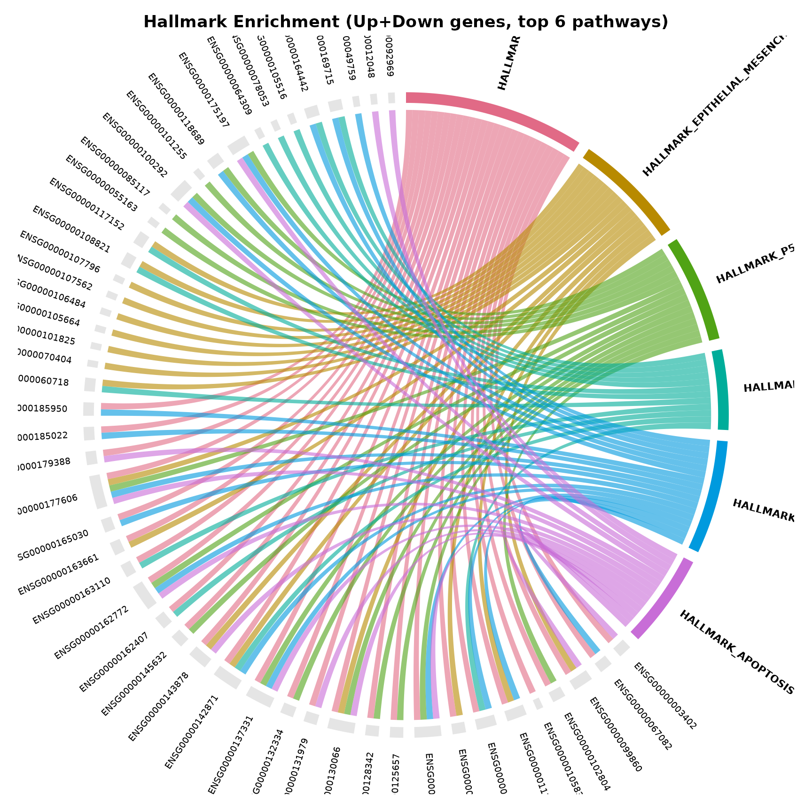
Reading the plot:
- Bold-labelled sectors on the left/top are pathways
- Smaller-labelled sectors on the right/bottom are genes
- Each chord connects a gene to a pathway it belongs to
- Genes with chords reaching multiple pathway sectors are hub genes
- Wider pathway sectors contain more genes
Understanding the output
get_enrichment_chord() returns data invisibly so you can
inspect the results programmatically:
if (!is.null(msig_hallmark$enrich) && nrow(msig_hallmark$enrich@result) > 0) {
result <- get_enrichment_chord(
msig_hallmark,
top_n = 6,
color_by = "pathway"
)
# Gene-pathway membership table
head(result$gene_data, 10)
# Hub genes (appearing in 2+ pathways)
cat("\nHub genes:", paste(head(result$hub_genes, 15), collapse = ", "), "\n")
cat("Total hub genes:", length(result$hub_genes), "\n")
}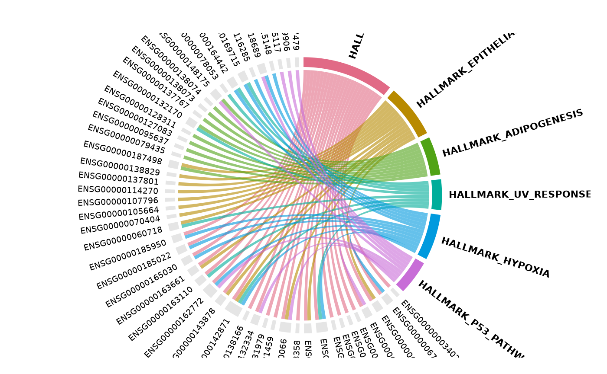
#>
#> Hub genes: ENSG00000060718, ENSG00000067082, ENSG00000099860, ENSG00000102804, ENSG00000118689, ENSG00000120129, ENSG00000122641, ENSG00000130066, ENSG00000132170, ENSG00000132334, ENSG00000142871, ENSG00000143878, ENSG00000148175, ENSG00000162772, ENSG00000163110
#> Total hub genes: 22Fold-Change Colouring
The real analytical power comes when chords encode fold-change from your DE results. This requires passing the VISTA object and comparison name.
Continuous fold-change gradient
if (!is.null(msig_hallmark$enrich) && nrow(msig_hallmark$enrich@result) > 0) {
get_enrichment_chord(
msig_hallmark,
vista = vista,
sample_comparison = comp_name,
top_n = 6,
color_by = "foldchange",
display_id = "SYMBOL",
title = "Chord coloured by log2 fold-change"
)
}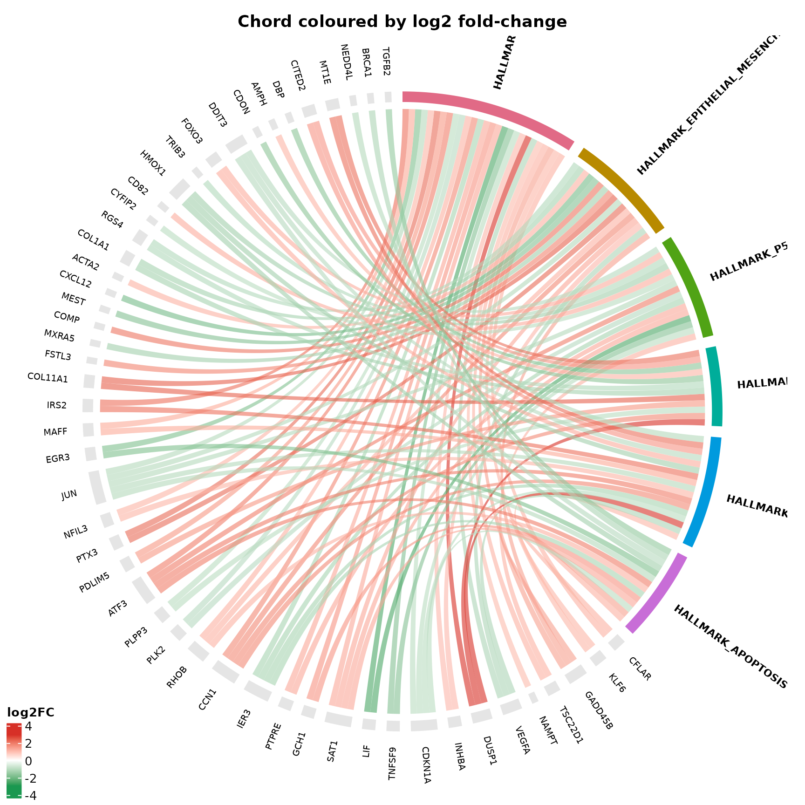
What to look for:
- Red chords indicate strongly upregulated genes
-
Blue/white chords would indicate weakly changed or
downregulated genes (rare here since we enriched on upregulated genes,
but meaningful when using
regulation = "Both") - The gradient legend (bottom-left) shows the fold-change scale
Regulation-based colouring
A categorical alternative – chords coloured as Up (red), Down (green), or Other (grey):
if (!is.null(msig_down$enrich) && nrow(msig_down$enrich@result) > 0) {
get_enrichment_chord(
msig_down,
vista = vista,
sample_comparison = comp_name,
top_n = 6,
color_by = "regulation",
display_id = "SYMBOL",
title = "Down-regulated pathways (regulation colouring)"
)
}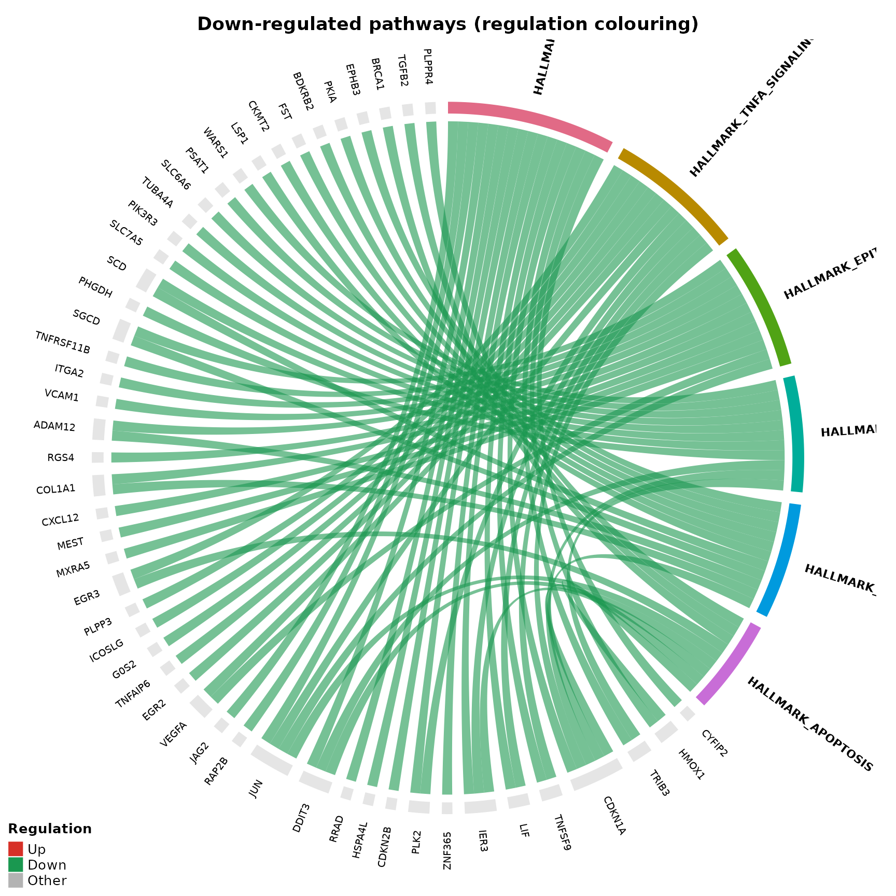
Sort gene sectors by fold-change
You can order the gene side of the chord by fold-change to make the strongest drivers appear first.
if (!is.null(msig_hallmark$enrich) && nrow(msig_hallmark$enrich@result) > 0) {
get_enrichment_chord(
msig_hallmark,
vista = vista,
sample_comparison = comp_name,
top_n = 6,
color_by = "foldchange",
gene_order_by = "abs_foldchange", # or "foldchange"
display_id = "SYMBOL",
title = "Gene sectors sorted by |log2FC|"
)
}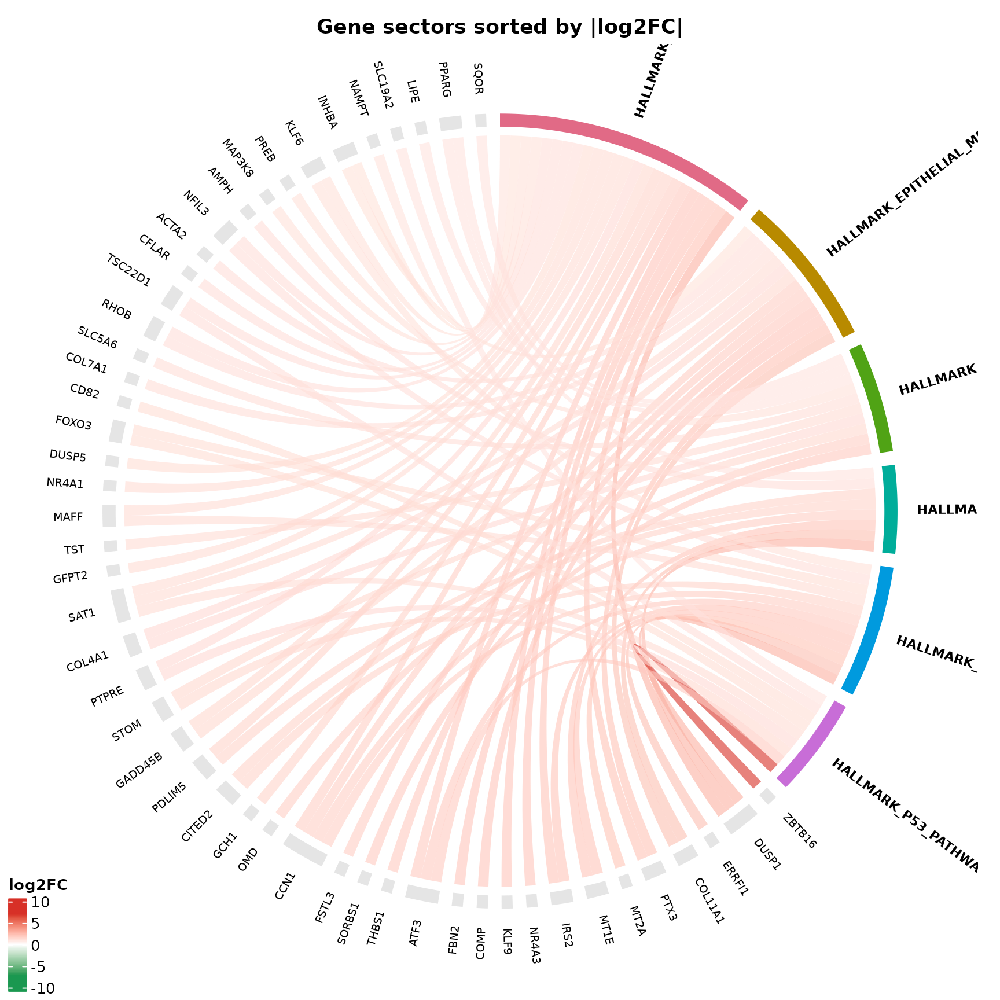
This is particularly useful for enrichments run with
regulation = "Both", where a pathway may contain a mix of
up and downregulated genes.
Combined Up + Down genes (fold-change coloured + FC-sorted)
This example uses an enrichment built from both up and down genes, colours chords by fold-change, and orders gene sectors by fold-change.
if (!is.null(msig_both$enrich) && nrow(msig_both$enrich@result) > 0) {
get_enrichment_chord(
msig_both,
vista = vista,
sample_comparison = comp_name,
top_n = 6,
color_by = "foldchange",
gene_order_by = "foldchange",
display_id = "SYMBOL",
title = "Up + Down enrichment: fold-change coloured and FC-sorted genes"
)
}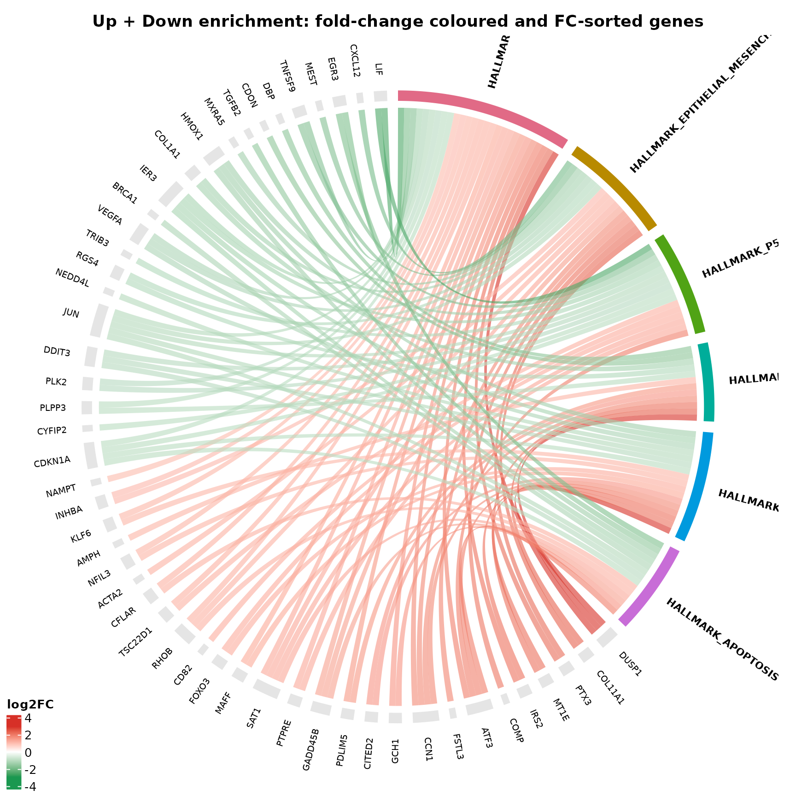
Hub Gene Analysis
Filtering to shared genes
The min_pathways parameter is the key analytical
control. Setting it to 2 removes all genes that appear in
only one pathway, revealing only the hub genes that
bridge multiple enriched terms.
if (!is.null(msig_hallmark$enrich) && nrow(msig_hallmark$enrich@result) > 0) {
hub_result <- get_enrichment_chord(
msig_hallmark,
vista = vista,
sample_comparison = comp_name,
top_n = 8,
min_pathways = 2,
color_by = "foldchange",
display_id = "SYMBOL",
title = "Hub genes only (shared across 2+ pathways)"
)
cat("Hub genes found:", length(hub_result$hub_genes), "\n")
cat("Genes:", paste(head(hub_result$hub_genes, 20), collapse = ", "), "\n")
}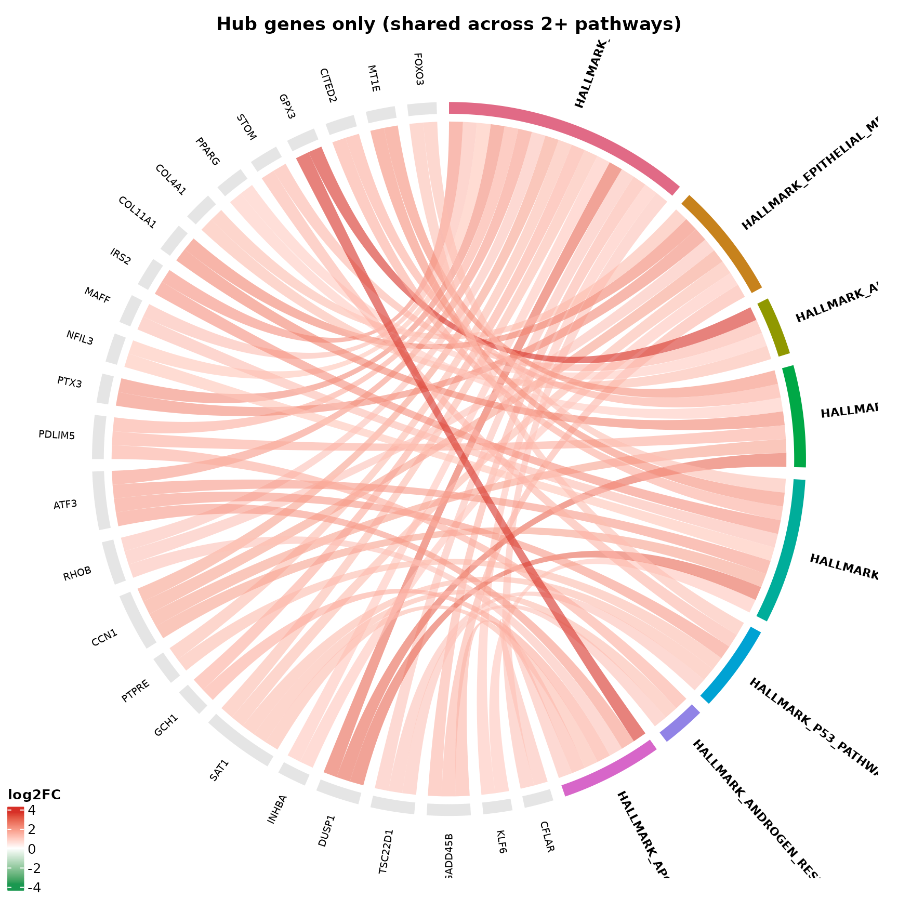
#> Hub genes found: 25
#> Genes: ENSG00000003402, ENSG00000060718, ENSG00000067082, ENSG00000099860, ENSG00000102804, ENSG00000118689, ENSG00000120129, ENSG00000122641, ENSG00000130066, ENSG00000131979, ENSG00000132170, ENSG00000132334, ENSG00000142871, ENSG00000143878, ENSG00000148175, ENSG00000162772, ENSG00000163110, ENSG00000163661, ENSG00000164442, ENSG00000165030Interpretation:
- Every gene shown has chords reaching at least 2 pathway sectors
- These genes are disproportionately responsible for the enrichment signal
- If the same 10 genes drive all 8 pathways, the enrichment is one signal, not eight
Increasing the threshold
For dense enrichments (e.g. C2 canonical pathways), you can raise the threshold further:
if (!is.null(msig_c2$enrich) && nrow(msig_c2$enrich@result) > 0) {
c2_result <- get_enrichment_chord(
msig_c2,
vista = vista,
sample_comparison = comp_name,
top_n = 8,
min_pathways = 3,
max_genes = 30,
color_by = "regulation",
display_id = "SYMBOL",
title = "C2 Pathways: genes in 3+ pathways"
)
if (length(c2_result$hub_genes)) {
cat("Top hub genes:", paste(head(c2_result$hub_genes, 15), collapse = ", "), "\n")
}
}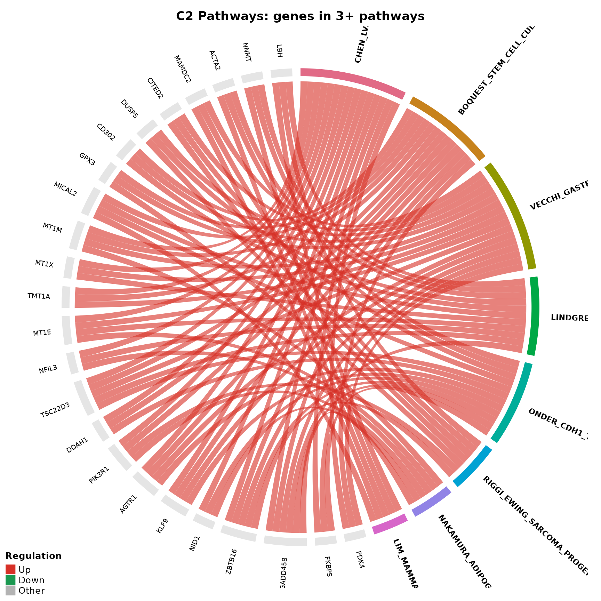
#> Top hub genes: ENSG00000004799, ENSG00000046653, ENSG00000048540, ENSG00000060718, ENSG00000071282, ENSG00000096060, ENSG00000099860, ENSG00000101347, ENSG00000101938, ENSG00000107796, ENSG00000109906, ENSG00000116962, ENSG00000119138, ENSG00000119711, ENSG00000120129Visual Customisation
Custom pathway colours
Pass a named colour vector to override the default HCL palette:
if (!is.null(msig_hallmark$enrich) && nrow(msig_hallmark$enrich@result) > 0) {
# Get the top pathway names first
top_pathways <- head(msig_hallmark$enrich@result$Description, 5)
# Define custom colors
custom_cols <- c(
"#264653", "#2A9D8F", "#E9C46A", "#F4A261", "#E76F51"
)
names(custom_cols) <- top_pathways
get_enrichment_chord(
msig_hallmark,
top_n = 5,
color_by = "pathway",
pathway_colors = custom_cols,
title = "Custom pathway colours"
)
}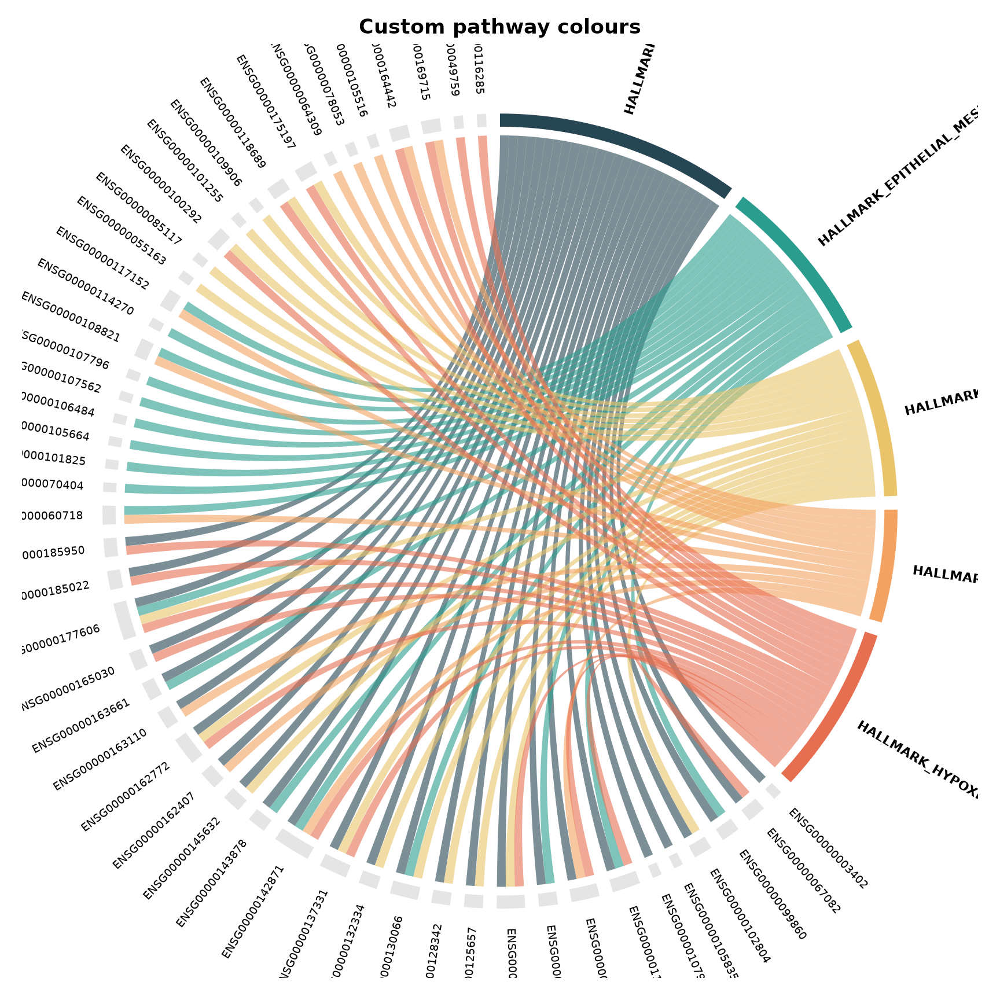
Adjusting layout
Fine-tune gap size, label size, and transparency:
if (!is.null(msig_hallmark$enrich) && nrow(msig_hallmark$enrich@result) > 0) {
get_enrichment_chord(
msig_hallmark,
top_n = 5,
color_by = "pathway",
gap_degree = 4, # wider gaps between sectors
label_cex = 0.6, # smaller labels
transparency = 0.2, # more opaque chords
title = "Adjusted layout"
)
}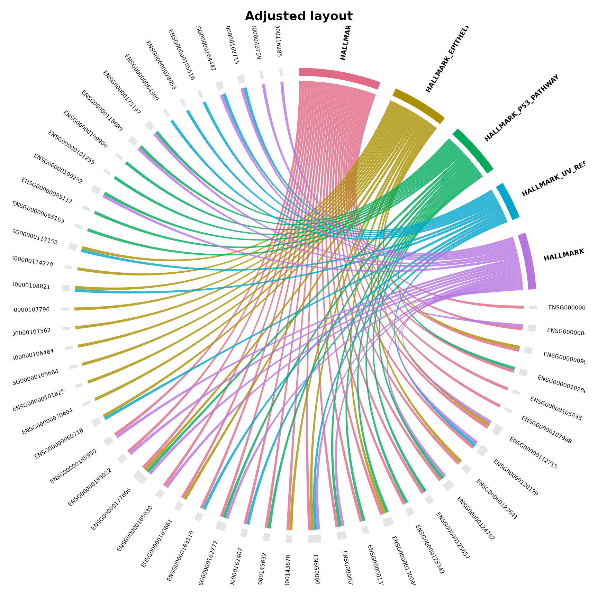
Selecting specific pathways
Instead of top N by p-value, pick pathways by name:
if (!is.null(msig_hallmark$enrich) && nrow(msig_hallmark$enrich@result) > 0) {
available <- msig_hallmark$enrich@result$Description
# Pick specific pathways of interest (if available)
pick <- intersect(
c("HALLMARK_P53_PATHWAY",
"HALLMARK_TNFA_SIGNALING_VIA_NFKB",
"HALLMARK_HYPOXIA",
"HALLMARK_APOPTOSIS"),
available
)
if (length(pick) >= 2) {
get_enrichment_chord(
msig_hallmark,
pathways = pick,
vista = vista,
sample_comparison = comp_name,
color_by = "foldchange",
display_id = "SYMBOL",
title = "Selected pathways of interest"
)
}
}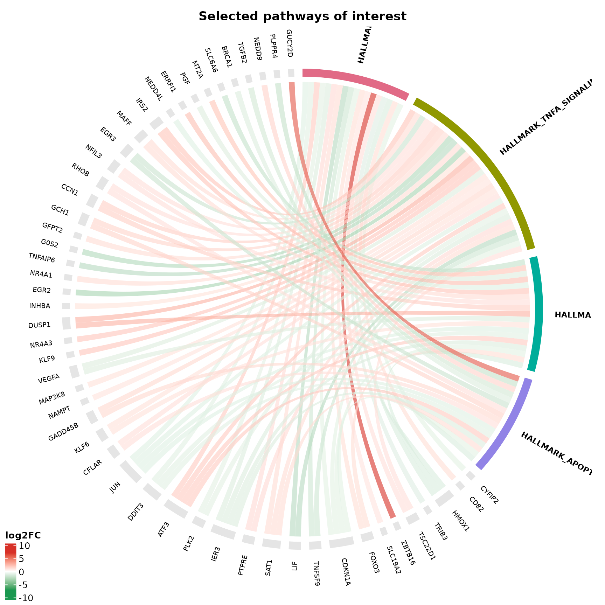
Comparison with Standard Visualisations
To appreciate what the chord diagram adds, compare it with the existing VISTA enrichment views on the same data:
Dot plot: what is enriched
if (!is.null(msig_hallmark$enrich) && nrow(msig_hallmark$enrich@result) > 0) {
get_enrichment_plot(msig_hallmark$enrich, top_n = 8)
}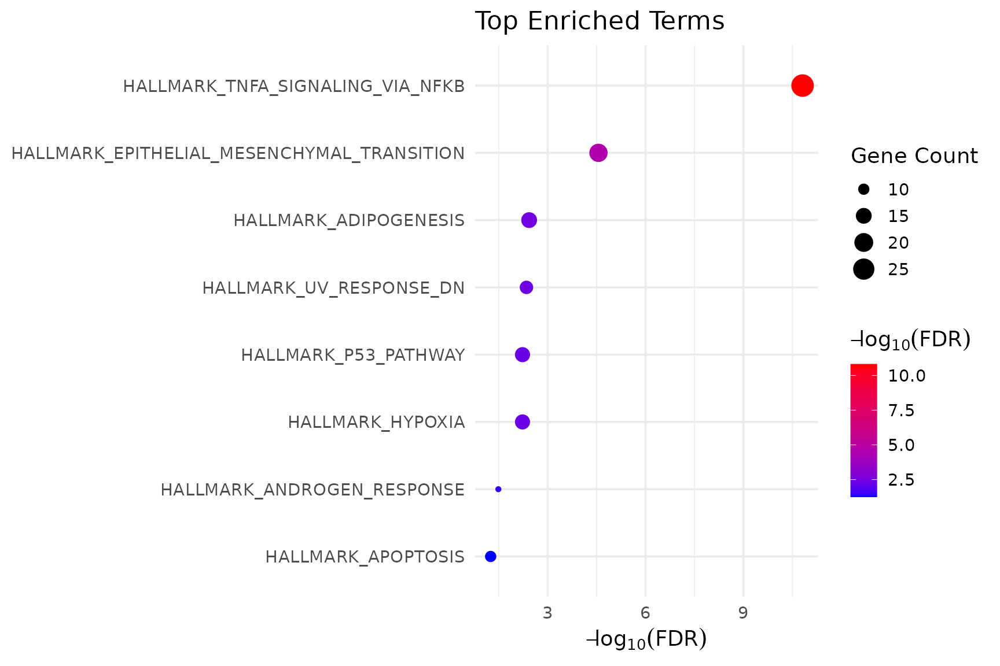
The dot plot answers: which pathways are significant? It shows p-values and gene counts but does not reveal which specific genes are shared.
Pathway heatmap: expression of pathway genes
if (!is.null(msig_hallmark$enrich) && nrow(msig_hallmark$enrich@result) > 0) {
get_pathway_heatmap(
x = vista,
enrichment = msig_hallmark$enrich,
sample_group = c("Untreated", "Dexamethasone"),
top_n = 3,
gene_mode = "union",
max_genes = 40,
value_transform = "zscore",
display_id = "SYMBOL",
annotate_columns = TRUE,
summarise_replicates = FALSE,
show_row_names = TRUE
)
}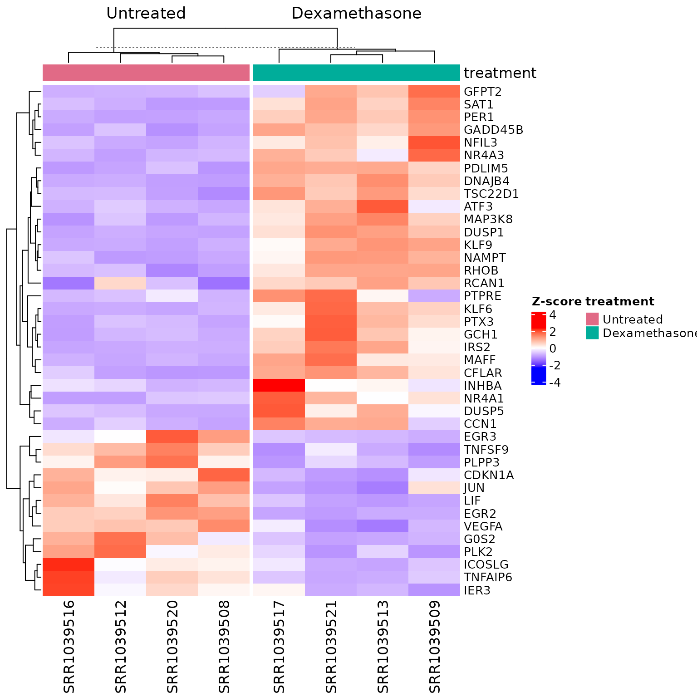
The heatmap answers: how do pathway genes behave across samples? It shows expression patterns but does not reveal gene sharing across pathways.
Chord diagram: topology of gene–pathway relationships
if (!is.null(msig_hallmark$enrich) && nrow(msig_hallmark$enrich@result) > 0) {
get_enrichment_chord(
msig_hallmark,
vista = vista,
sample_comparison = comp_name,
top_n = 8,
min_pathways = 2,
color_by = "foldchange",
display_id = "SYMBOL",
title = "Hub genes bridging enriched pathways"
)
}The chord diagram answers: which genes bridge which pathways, and are they going up or down?
| View | Question it answers | Key insight |
|---|---|---|
get_enrichment_plot |
What pathways are significant? | Statistical significance and size |
get_pathway_heatmap |
How do pathway genes behave across samples? | Expression patterns and clustering |
get_enrichment_chord |
Which genes connect which pathways? | Hub genes and pathway redundancy |
These three views are complementary, not competing. Together they form a complete picture of functional enrichment.
Practical Guidelines
When to use chord diagrams
- After running enrichment to understand redundancy in your top terms
- When you need to identify hub genes for follow-up validation (qPCR, western blot)
- When presenting to collaborators who need a visual map of gene–pathway relationships
When NOT to use chord diagrams
- With > 10 pathways and > 50 genes (becomes unreadable – use
max_genescap) - As a replacement for dot plots (you still need the dot plot for significance)
- For genome-positional data (use
get_foldchange_chromosome_plot()instead)
Session Information
sessionInfo()
#> R version 4.5.3 (2026-03-11)
#> Platform: x86_64-pc-linux-gnu
#> Running under: Ubuntu 24.04.3 LTS
#>
#> Matrix products: default
#> BLAS: /usr/lib/x86_64-linux-gnu/openblas-pthread/libblas.so.3
#> LAPACK: /usr/lib/x86_64-linux-gnu/openblas-pthread/libopenblasp-r0.3.26.so; LAPACK version 3.12.0
#>
#> locale:
#> [1] LC_CTYPE=C.UTF-8 LC_NUMERIC=C LC_TIME=C.UTF-8
#> [4] LC_COLLATE=C.UTF-8 LC_MONETARY=C.UTF-8 LC_MESSAGES=C.UTF-8
#> [7] LC_PAPER=C.UTF-8 LC_NAME=C LC_ADDRESS=C
#> [10] LC_TELEPHONE=C LC_MEASUREMENT=C.UTF-8 LC_IDENTIFICATION=C
#>
#> time zone: UTC
#> tzcode source: system (glibc)
#>
#> attached base packages:
#> [1] stats4 stats graphics grDevices utils datasets methods
#> [8] base
#>
#> other attached packages:
#> [1] org.Hs.eg.db_3.22.0 AnnotationDbi_1.72.0
#> [3] airway_1.30.0 SummarizedExperiment_1.40.0
#> [5] Biobase_2.70.0 GenomicRanges_1.62.1
#> [7] Seqinfo_1.0.0 IRanges_2.44.0
#> [9] S4Vectors_0.48.0 BiocGenerics_0.56.0
#> [11] generics_0.1.4 MatrixGenerics_1.22.0
#> [13] matrixStats_1.5.0 dplyr_1.2.0
#> [15] ggplot2_4.0.2 VISTA_0.99.0
#> [17] BiocStyle_2.38.0
#>
#> loaded via a namespace (and not attached):
#> [1] splines_4.5.3 ggplotify_0.1.3 tibble_3.3.1
#> [4] R.oo_1.27.1 polyclip_1.10-7 lifecycle_1.0.5
#> [7] rstatix_0.7.3 edgeR_4.8.2 doParallel_1.0.17
#> [10] lattice_0.22-9 MASS_7.3-65 backports_1.5.0
#> [13] magrittr_2.0.4 limma_3.66.0 sass_0.4.10
#> [16] rmarkdown_2.30 jquerylib_0.1.4 yaml_2.3.12
#> [19] otel_0.2.0 ggtangle_0.1.1 cowplot_1.2.0
#> [22] DBI_1.3.0 RColorBrewer_1.1-3 abind_1.4-8
#> [25] purrr_1.2.1 R.utils_2.13.0 msigdbr_26.1.0
#> [28] yulab.utils_0.2.4 tweenr_2.0.3 rappdirs_0.3.4
#> [31] gdtools_0.5.0 circlize_0.4.17 enrichplot_1.30.5
#> [34] ggrepel_0.9.7 tidytree_0.4.7 pkgdown_2.2.0
#> [37] codetools_0.2-20 DelayedArray_0.36.0 DOSE_4.4.0
#> [40] ggforce_0.5.0 tidyselect_1.2.1 shape_1.4.6.1
#> [43] aplot_0.2.9 farver_2.1.2 jsonlite_2.0.0
#> [46] GetoptLong_1.1.0 Formula_1.2-5 iterators_1.0.14
#> [49] systemfonts_1.3.2 foreach_1.5.2 tools_4.5.3
#> [52] ggnewscale_0.5.2 treeio_1.34.0 ragg_1.5.1
#> [55] Rcpp_1.1.1 glue_1.8.0 SparseArray_1.10.9
#> [58] xfun_0.56 DESeq2_1.50.2 qvalue_2.42.0
#> [61] withr_3.0.2 BiocManager_1.30.27 fastmap_1.2.0
#> [64] GGally_2.4.0 digest_0.6.39 R6_2.6.1
#> [67] gridGraphics_0.5-1 textshaping_1.0.5 colorspace_2.1-2
#> [70] GO.db_3.22.0 RSQLite_2.4.6 R.methodsS3_1.8.2
#> [73] tidyr_1.3.2 fontLiberation_0.1.0 data.table_1.18.2.1
#> [76] httr_1.4.8 htmlwidgets_1.6.4 S4Arrays_1.10.1
#> [79] scatterpie_0.2.6 ggstats_0.13.0 pkgconfig_2.0.3
#> [82] gtable_0.3.6 blob_1.3.0 ComplexHeatmap_2.26.1
#> [85] S7_0.2.1 XVector_0.50.0 clusterProfiler_4.18.4
#> [88] htmltools_0.5.9 fontBitstreamVera_0.1.1 carData_3.0-6
#> [91] bookdown_0.46 fgsea_1.36.2 clue_0.3-67
#> [94] scales_1.4.0 png_0.1-9 ggfun_0.2.0
#> [97] knitr_1.51 reshape2_1.4.5 rjson_0.2.23
#> [100] nlme_3.1-168 curl_7.0.0 cachem_1.1.0
#> [103] GlobalOptions_0.1.3 stringr_1.6.0 parallel_4.5.3
#> [106] desc_1.4.3 pillar_1.11.1 grid_4.5.3
#> [109] vctrs_0.7.1 ggpubr_0.6.3 car_3.1-5
#> [112] tidydr_0.0.6 cluster_2.1.8.2 evaluate_1.0.5
#> [115] cli_3.6.5 locfit_1.5-9.12 compiler_4.5.3
#> [118] rlang_1.1.7 crayon_1.5.3 ggsignif_0.6.4
#> [121] labeling_0.4.3 forcats_1.0.1 plyr_1.8.9
#> [124] fs_1.6.7 ggiraph_0.9.6 stringi_1.8.7
#> [127] BiocParallel_1.44.0 assertthat_0.2.1 babelgene_22.9
#> [130] Biostrings_2.78.0 lazyeval_0.2.2 GOSemSim_2.36.0
#> [133] fontquiver_0.2.1 Matrix_1.7-4 patchwork_1.3.2
#> [136] bit64_4.6.0-1 KEGGREST_1.50.0 statmod_1.5.1
#> [139] igraph_2.2.2 broom_1.0.12 memoise_2.0.1
#> [142] bslib_0.10.0 ggtree_4.0.4 fastmatch_1.1-8
#> [145] bit_4.6.0 ape_5.8-1 gson_0.1.0References
- Himes BE et al. (2014). “RNA-Seq transcriptome profiling identifies CRISPLD2 as a glucocorticoid responsive gene that modulates cytokine function in airway smooth muscle cells.” PLoS One 9(6): e99625.
- Gu Z et al. (2014). “circlize implements and enhances circular visualization in R.” Bioinformatics, 30(19), 2811–2812.
- Wu T et al. (2021). “clusterProfiler 4.0: A universal enrichment tool for interpreting omics data.” The Innovation, 2(3), 100141.
- Subramanian A et al. (2005). “Gene set enrichment analysis: a knowledge-based approach for interpreting genome-wide expression profiles.” PNAS, 102(43), 15545–15550.